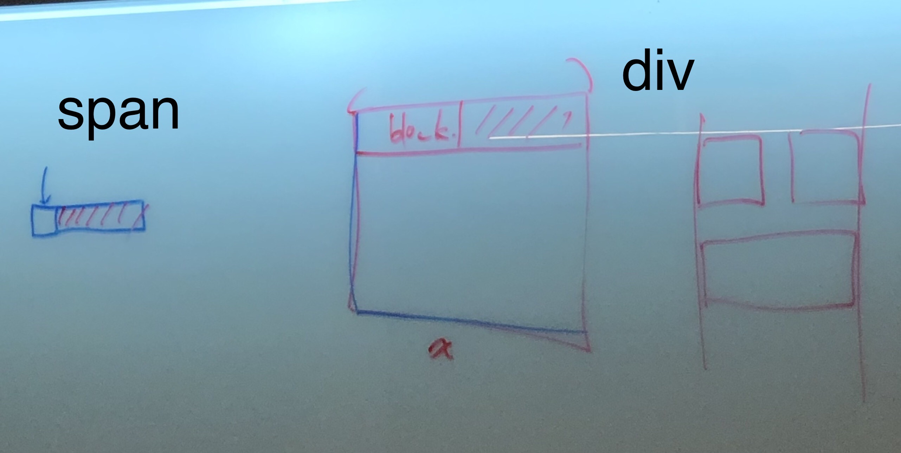
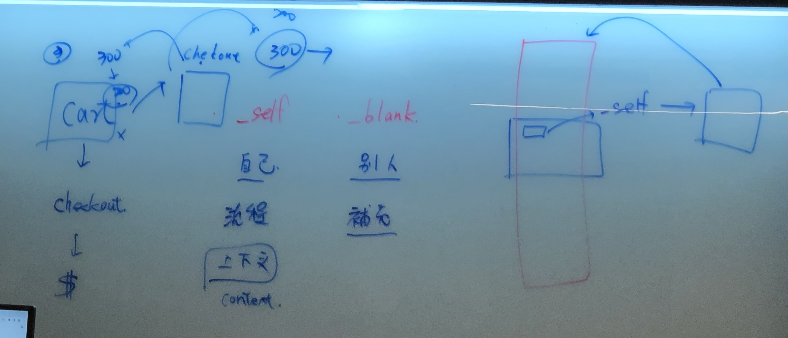
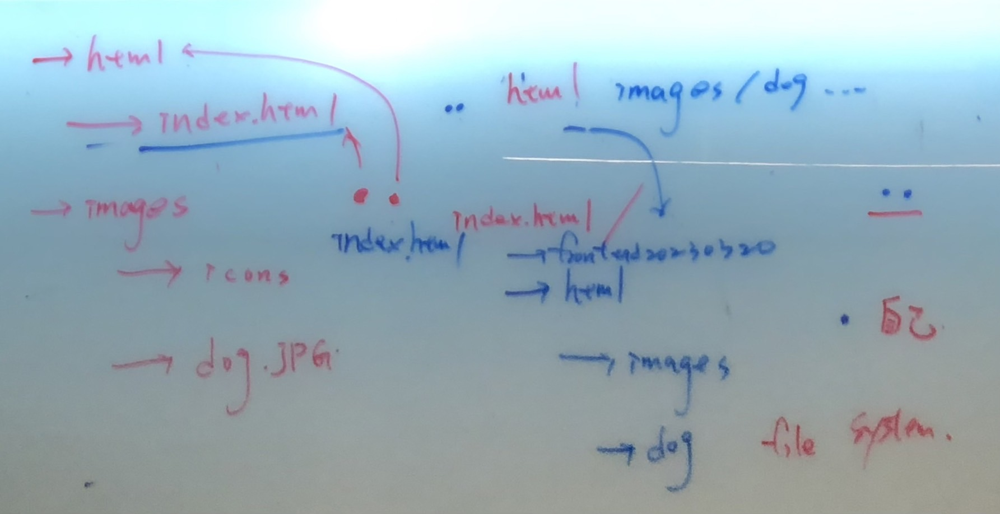
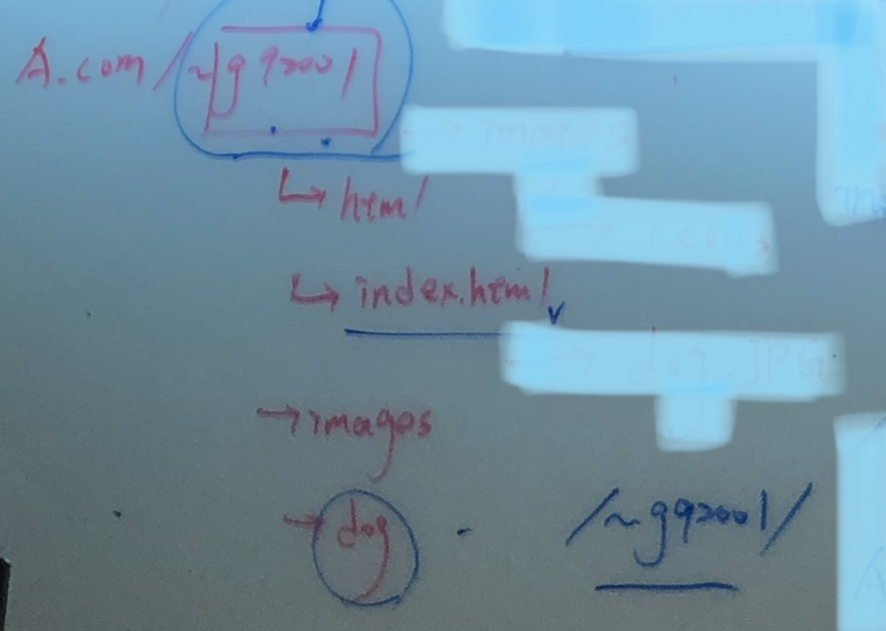
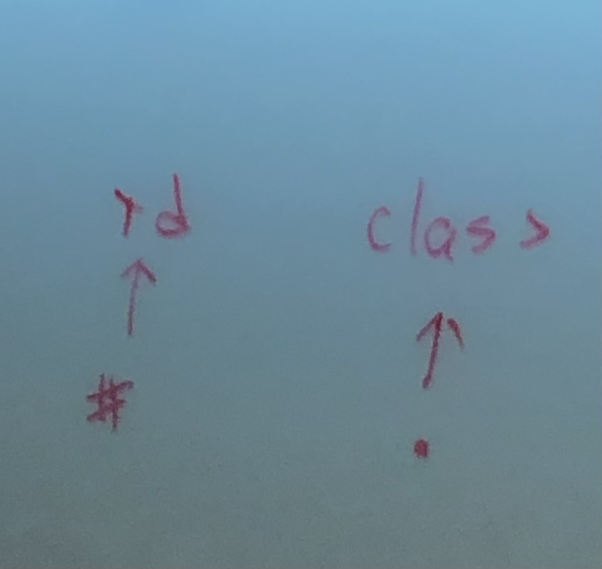

筆記:
元素element
div(區塊block) :一個大範圍，範圍裡可設定許多內容
屬性 id="1" class="2":在標籤元素『>』之間，一個屬性裡要分成2個，要以『空白隔開』class="2 3"
接續(內聯inline):接續下一行內容span
如:Ap
ple

target="_self"在同個視窗到另一個網頁;target="_blank"跳出新視窗，最多用為補充資料

照片路徑:『.』自己，『..』自己的上一層。

相對路徑:沒有斜線，絕對路徑:有斜線『/』

同個頁面-回頁首(錨點)
回頁首
